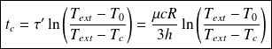
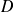

Sujet PC 2016-04 : Thermique / corrigé complet
Le sujet est téléchargeable ci-dessous.
Le corrigé des questions de physique est de Jean-Marc Vince, et les indices aussi ! Merci à lui.
Cuisson d'un œuf
Voir la première page du sujet qui présente la problématique de l'étude.
Durée de cuisson
La durée de cuisson d'un œuf de taille standard, sortant du réfrigérateur à , est de l'ordre de 10 min dans l'eau bouillante (œuf « dur »). Dans un premier modèle, on considère que la température de l'intérieur de l'œuf est uniforme à tout instant et on le considère de forme sphérique de rayon . On rappelle que les échanges conducto-convectifs à l'interface solide-fluide sont modélisés par la relation de Newton
avec
 le vecteur densité de courant thermique à l'interface entre le solide et le fluide.
le vecteur densité de courant thermique à l'interface entre le solide et le fluide.
Question
1. Déterminer à partir d'un bilan d'énergie sur l'œuf, une équation différentielle modélisant l'évolution de la température de l'œuf au cours du temps, de la forme
où l'on donnera les expressions de
et
en fonction du coefficient
 , de la température de l'eau bouillante
, du rayon de l'œuf
, de la température de l'eau bouillante
, du rayon de l'œuf
 , de sa masse volumique
et de sa capacité thermique massique
, de sa masse volumique
et de sa capacité thermique massique
 .
.
Résoudre cette équation en déterminant .
Déterminer l'expression de la durée au bout de laquelle l'intérieur de l'œuf a atteint sa température de cuisson .
En déduire une valeur approchée du coefcient
.
On prendra et .
La température dans l’œuf est supposée uniforme, on peut donc considérer l'œuf comme un solide homogène et faire un bilan sur la totalité de l'œuf.
L'application du premier principe à l’œuf, entre les instants
 et
, en considérant le flux conducto-convectif à sa surface donne :
et
, en considérant le flux conducto-convectif à sa surface donne :
soit
qui est l'équation attendue avec et . On pose pour résoudre
Avec la condition initiale , on obtient
On obtient avec soit

On utilise la loi précédente pour obtenir
 , sachant que
et
:
, sachant que
et
:
.
Profil intérieur de cuisson
Voir modèle page 2 du sujet.
Question
2. Montrer que, compte-tenu de la symétrique sphérique du problème, l'équation de diffusion s'écrit :
Donner le nom et l'expression du coefficient  .
Déterminer l'expression de l'ordre de grandeur de la durée
 associée au phénomène de diffusion thermique décrit.
associée au phénomène de diffusion thermique décrit.
Calculer
pour
 et
. Commenter le résultat.
et
. Commenter le résultat.
Déterminer comment évolue cette durée si un œuf a un volume double du précédent.
On considère ici l’œuf de conductivité thermique
homogène (blanc ou jaune ou coquille) et on réalise un bilan thermique classique sur l'élément de volume compris entre les sphères de rayons
 et
pour ce système à symétrie sphérique.
et
pour ce système à symétrie sphérique.
Penser à l'analyse dimensionnelle.
Le système étant à symétrie sphérique on peut écrire et le vecteur densité de flux thermique. L'application du premier principe à ce système donne
ce qui donne

Avec , on obtient
qui est l'expression demandée avec , qu'on nomme diffusivité thermique.
Par analyse dimensionnelle, on peut estimer la durée
associée à ce phénomène de diffusion thermique sur une échelle spatiale de taille caractéristique
par
Avec les valeurs numériques fournies, on trouve
de l'ordre de
! C'est beaucoup mais que demander de plus que l'ordre de grandeur du
résultat avec une simple analyse dimensionnelle... L'ordre de grandeur est le bon pour une cuisson réelle en 10 minutes.
Si le volume double, le rayon est multiplié par
et donc
, qui évolue comme
, par
.
On souhaite maintenant modéliser numériquement l'évolution au cours du temps du profil de température au sein de l'œuf. On utilise pour cela la méthode d'Euler pour discrétiser l'équation précédente.
Le principe adopté est le suivant. Le profil de température initial
 au sein de l'œuf est connu. On pose comme variable intermédiaire :
au sein de l'œuf est connu. On pose comme variable intermédiaire :
À chaque instant
, on utilise l'équation pour calculer les valeurs de
et mettre à jour les valeurs de
. On peut ainsi obtenir le profil de température
.
Question
3. Justifier, à l'aide de la méthode d'Euler, que le principe de résolution revient à utiliser les équations numériques suivantes :
avec et les périodes d'échantillonnage (ou « pas ») temporelle et spatiale de la résolution numérique.
Personnellement, je trouve que le sujet manque de rigueur sur cette question.
D'abord, il y a pour moi une confusion entre les indices
 et
et
 qui devraient être précisés pour chaque variable discrétisée. Je poserai
qui devraient être précisés pour chaque variable discrétisée. Je poserai
 ,
et
, de même pour
.
,
et
, de même pour
.
Ensuite, il y a pour moi une petite erreur dans la seconde expression.
J'écrirai donc les équations numériques sous la forme suivante :
Pour justifier ces équations numériques, la manière la plus rigoureuse me semble de repartir des formules de Taylor-Young :
Première équation
Ici, , donc .
En faisant une approximation à l'ordre 0, en notant , et en utilisant les notations présentées dans l'indice :
Seconde équation
De même, on peut écrire :
Soit
En prenant l'hypothèse d'une discrétisation homogène en temps et en espace, on peut poser , .
On a alors l'approximation suivante :
De plus, on a :
, donc .
Donc
Finalement en utilisant l'équation de diffusion de la question 2, on peut en déduire l'approximation suivante :
Donc
Le programme 2016-004.py permet de représenter l'évolution du profil de température au sein de l'œuf jusqu'à l'instant . La cuisson s'effectue à 100 °C et on considère un œuf sorti du réfrigérateur à 4 °C.
Le code est reproduit ci-dessous.
# Vous avez la liberté complète de modifier l'ensemble du programme# de façon à répondre aux questions de l'épreuve.# Le lancement du programme s'effectue au moyen de la touche F5 ou# du menu 'Exécuter' --> 'Exécuter le fichier'import scipy as sp
import matplotlib.pyplot as plt
# Données spécifiques au problèmeD = 1.4e-7 # Coefficient de diffusion thermique (m^2/s)
# Données spécifiques à la résolution numériqueN = 100 # Nombre de points
R = 2e-2 # Rayon de l'oeuf (m)
le = R/N # Pas d'intégration (distance en m)
n = 10000 # Nombre de points
# Profil initial de température, à modifierT = (N-1)*[0.0 + 273.15] + [0.0 + 273.15]
tn = 15*60 # Durée de l'expérience (s), à modifier
taue = tn/n # Pas d'intégration (duree en s)
r = sp.linspace(0, R, N) # Valeurs en abscisse
plt.figure(1)
for i in range(n): # Durée de l'expérience representée par 'n' points
Theta = [0]
for j in range(N-1):
Theta.append((T[j+1]-T[j]) / le) # Calcul des derivées premières de T par rapport à 'x'
for k in range(N-1): # La dernière valeur du profil reste inchangée
T[k] = T[k] + taue / le * D / ((k+1)*le)**2 * (((k+1)*le)**2 * Theta[k+1] - (k*le)**2 * Theta[k]) # Ajustement des valeurs de T dans le profil de température
if i*10%n == 0: # Représentation de 10 courbes uniquement
plt.plot(r, T)
plt.plot(r, T) # Représentation de la dernière courbe
plt.xlabel('$r \ \mathrm{(m)}$')
plt.ylabel('$T \ \mathrm{(K)}$')
plt.title('Representation de $T(r,t=t_n)$')
plt.show()
Question
4. Modifier le profil initial de température puis exécuter le programme pour représenter l'évolution de jusqu'à une date choisie par vos soins.
Par tâtonnement, en modifiant la valeur de , déterminer une estimation de la durée nécessaire pour que l'œuf soit « dur », c'est à dire que le blanc et le jaune soient totalement coagulés.
Commenter le résultat.
Le programme n'est pas très long et bien commenté. Il me semble donc assez rapide de se familiariser avec ce code. Le module importé est scipy.
Par contre, je ne le trouve pas très clair car il écrase à chaque pas de temps la valeur estimée de la température à l'itération temporelle précédente. C'est pour cette raison que la seconde équation numérique de la question 3 confondait les indices en temps et en espace.
Du coup, pour tracer les différents profils, un plt.plot() est inséré dans la boucle temporelle for pour obtenir 10 tracés équi-répartis pendant les n itérations temporelles.
for i in range(n): # Durée de l'expérience representée par 'n' points
...if i*10%n == 0: # Représentation de 10 courbes uniquement
plt.plot(r, T)
Tracé de l'évolution temporelle
La ligne du programme à modifier est la suivante :
# Profil initial de température, à modifierT = (N-1)*[4.0 + 273.15] + [100.0 + 273.15]
T est la liste des températures à un instant
, ici à
.
T[0] est la température à cœur de l’œuf, donc pour
, et T[-1] est la température de la coquille, donc pour
.
Pour représenter l'évolution de
, il faut donc renseigner le profil initial T sous la forme suivante :
# Profil initial de température, à modifierT = (N-1)*[0.0 + 273.15] + [0.0 + 273.15]
La durée de la simulation est conservée.
tn = 15*60 # Durée de l'expérience (s), à modifier
Voici les profils de température obtenus.
Estimation de la durée de cuisson pour un œuf dur
D'après le tableau de la figure 2 du sujet, un œuf est dur si le jaune est totalement coagulé, c'est à dire, si la température à cœur est de 85°C.
Pour lire cette information sur le graphique, il suffit que le nombre de courbes tracées corresponde à une courbe par minute. Il faut donc en tracer 15 + 1 = 16, et de tracer une droite horizontale correspondant à 85 + 273.15 K.
Voici les lignes modifiées.
if i*16%n == 0: # Représentation de 16 courbes uniquement
plt.plot(r, T)
plt.plot([0, R], [85 + 273.15, 85 + 273.15], color = 'black', linestyle = ':')
Le nouveau tracé permet d'estimer le temps de cuisson entre 12 et 13 minutes.
Fournir un résultat de l'ordre de la minute parait cohérent avec les données fournies dans le sujet.
Commentaire
Le temps de cuisson est cohérent avec la durée de cuisson d'un œuf standard annoncé en haut de la page 2 du sujet de 10 minutes.
On considère que la répartition du jaune dans un œuf vérifie .
Question
5. Par tâtonnement, en modifiant la valeur de , déterminer la durée nécessaire pour que l’œuf soit « à la coque », c'est à dire que le blanc soit totalement coagulé, mais pas le jaune.
Commenter le résultat.
Estimation du temps de cuisson d'un œuf « à la coque »
Pour que le blanc soit totalement coagulé, il faut que la température de l'interface jaune/blanc soit de 70°C.
Deux lignes sont rajoutées sur le graphique.
plt.plot([0.8 * R, 0.8 * R], [0 + 273.15, 100 + 273.15], color = 'black', \
linestyle = ':')
plt.plot([0, R], [70 + 273.15, 70 + 273.15], color = 'black', linestyle = ':')
Le temps de cuisson de l’œuf à la coque est donc estimé à 3 minutes.
Commentaire
C'est aussi le temps conseillé par ma grand-mère.
L'œuf dit « parfait » (Voir la figure 4 du sujet), servi dans certains restaurants, s'obtient à l'aide d'une cuisson à 64,5 °C.
Question
6. Déterminer l'ordre de grandeur de la durée nécessaire pour que l'œuf soit « parfait ».
Il faut pouvoir interpréter le cahier des charges du sujet.
À partir d'une eau de cuisson à 100°C
Si on souhaite obtenir un œuf parfait à partir d'une eau de cuisson à 100°C, il faut arrêter la cuisson au moment où l'interface jaune/blanc arrive à 64.5°C, sinon une partie du jaune aura commencé sa coagulation.
Dans ce cas, le tracé du graphique est modifié de la sorte.
plt.plot([0.8 * R, 0.8 * R], [0 + 273.15, 100 + 273.15], color = 'black', \
linestyle = ':')
plt.plot([0, R], [64.5 + 273.15, 64.5 + 273.15], color = 'black', \
linestyle = ':')
Le temps de cuisson est alors de 2 minute, mais on voit ensuite que le cœur de l’œuf est encore à une température proche de 4°C, ce qui n'est sans doute pas envisageable.
À partir d'une eau de cuisson à 70°C
En s'inspirant du tableau de la figure 2 de la première page du sujet, je propose une solution à partir d'une cuisson à basse température, à 70°C.
Je modifie donc le profil initial de la température.
# Profil initial de température, à modifierT = (N-1)*[4.0 + 273.15] + [70.0 + 273.15]
Le temps de cuisson peut être estimé avec ce protocole à 9 minutes.
Complément :
En fait l’œuf parfait est une cuisson à 64°C pendant 45 minutes à une heure...
En réalité le blanc et le jaune n'ont pas tout à fait la même conductivité thermique, elle est même dans un rapport double. On peut trouver que pour le blanc , et que pour le jaune .
Question
7. Modifier le programme pour tenir compte de cette différence et estimer à nouveau le temps de cuisson d'un œuf.
Commenter le résultat.
Tracé de l'évolution des températures pour un œuf hétérogène
J'ai remplacé la boucle for d'itérateur k par les deux boucles for ci-dessous.
for kjaune in range(0, int(alpha * (N - 1))):
# La dernière valeur du profil reste inchangéeT[kjaune] = T[kjaune] + taue / le * Dj / ((kjaune+1)*le)**2 * (((kjaune+1)*le)**2 * Theta[kjaune+1] - (kjaune*le)**2 * Theta[kjaune])
# Ajustement des valeurs de T dans le profil de température dans le jaune d'oeuffor kblanc in range(int(alpha * (N - 1)), N-1):
# La dernière valeur du profil reste inchangéeT[kblanc] = T[kblanc] + taue / le * Db / ((kblanc+1)*le)**2 * (((kblanc+1)*le)**2 * Theta[kblanc+1] - (kblanc*le)**2 * Theta[kblanc])
# Ajustement des valeurs de T dans le profil de température dans le blanc d'oeufEt j'ai ajouté les valeurs des coefficients de diffusion et de en préambule du programme.
# Données spécifiques au problèmeD = 1.4e-7 # Coefficient de diffusion thermique (m^2/s)
Dj = 1.0e-7
Db = 1.7e-7
alpha = 0.8

Commentaire
Le temps de cuisson est passé de 9 minutes à plus de 11 minutes.
Le coefficient de diffusion du blanc est supérieur à la valeur prise pour l’œuf homogène (1.7e-7 USI au lieu de 1.4e-7 USI), et celui du jaune lui est inférieur (1e-7 USI au lieu de 1.4e-7 USI). Or, il y a beaucoup plus de jaune que de blanc puisque le rapport est fixé à 0.8. Il est donc globalement plus long de chauffer l’œuf.
Question
8. Modifier le programme pour représenter l'évolution de la température à cœur de l'œuf au cours du temps.
Commenter le résultat.
C'est là où la solution choisie dans le code proposé d'écraser les valeurs successives de la liste des températures à chaque itération se révèle peu pratique.
Il faut donc modifier le code pour obtenir ce tracé.
Tracé de l'évolution de la température à cœur de l'œuf au cours du temps
J'ai ajouté une liste Tcoeur au programme pour mémoriser la valeur des températures à cœur (donc les T[0]) à chaque itération temporelle.
# Initialisation TcoeurTcoeur = []Puis il faut insérer l'ajout de la température à cœur à la fin de chaque itération temporelle.
for i in range(n): # Durée de l'expérience representée par 'n' points
Theta = [0]
for j in range(N-1):
Theta.append((T[j+1]-T[j]) / le)
# Calcul des derivées premières de T par rapport à 'x'for kjaune in range(0, int(alpha * (N - 1))):
# La dernière valeur du profil reste inchangéeT[kjaune] = T[kjaune] + taue / le * Dj / ((kjaune+1)*le)**2 * (((kjaune+1)*le)**2 * Theta[kjaune+1] - (kjaune*le)**2 * Theta[kjaune])
# Ajustement des valeurs de T dans le profil de température dans le jaune d'oeuffor kblanc in range(int(alpha * (N - 1)), N-1):
# La dernière valeur du profil reste inchangéeT[kblanc] = T[kblanc] + taue / le * Db / ((kblanc+1)*le)**2 * (((kblanc+1)*le)**2 * Theta[kblanc+1] - (kblanc*le)**2 * Theta[kblanc])
# Ajustement des valeurs de T dans le profil de température dans le blanc d'oeufTcoeur.append(T[0])
Enfin, il reste à tracer la courbe recherchée.
plt.figure(2)
plt.plot(t, Tcoeur)
plt.xlabel('$t \ \mathrm{(s)}$')
plt.ylabel('$T \ \mathrm{(K)}$')
plt.title('Representation de $T(0,t)$')
plt.grid()
plt.show()
Commentaire
On peut distinguer trois phases dans ce tracé.
La première phase, constante au début et de courbure convexe ensuite, illustre la phase où le cœur de l’œuf n'est pas encore vraiment affecté par la cuisson de l’œuf.
La seconde phase de pente maximale illustre la phase où l'augmentation de la température à cœur est maximale.
La troisième phase de courbure concave illustre la phase où la différence de température entre le cœur et l'extérieur de l’œuf diminue, ce qui diminue également l'augmentation de la température au cœur.